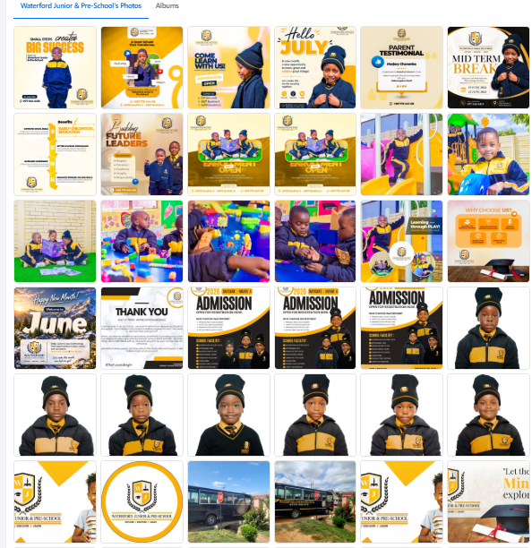

Early Years Care
Pre-school routines balance play, movement, language, numeracy, and social growth.
Explore. Discover. Learn.
Bright early learning, confident junior schooling, and a caring community shaped around every child's next step.
Welcome
Waterford Junior & Pre-School combines structured learning with play, creativity, sport, and character formation. The result is a warm school environment where learners feel known, capable, and ready to grow.
Why Choose Us?
Pre-school routines balance play, movement, language, numeracy, and social growth.
Core subjects are taught with clear progression, classroom support, and regular feedback.
Art, music, reading, presentation, and practical projects give learners room to shine.
Families, teachers, and pupils work together in a respectful and values-led culture.
Programs
School Life
Events, class activities, celebrations, and learner milestones give every term its own rhythm.
See the gallery